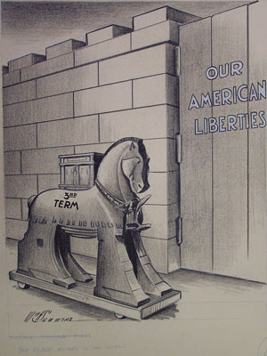

 The Oldest Mistake in the World by Summers |
Cartoons have satirized the political landscape since the mid-nineteenth century, but a story from 64 years ago remains fresh and on view at Princeton University's Seeley G. Mudd Manuscript Library. "Testing Boundaries: Cartoon Visions of Roosevelt's Third Term" highlights eleven cartoons from the Political Cartoon Collection that examine President Franklin Delano Roosevelt's quest for an unprecedented third term. On view from August 2 through January 31, 2005, "Testing Boundaries: Cartoon Visions of Roosevelt's Third Term", follows the 1940 presidential nomination process as seen through the keen satirical eyes of the day's well known cartoonists. From the first mention of a possible third term with all sides questioning the wisdom of such a move through to the partisan debates, these cartoons show the issues in a light that can not easily be matched by text alone. Despite serving two terms in office, FDR believed that he still had much to accomplish. He eventually decided to run for a third term, though he faced criticism from within his own party as well as from his Republican opponents. Some critics expressed concern that by breaking the two-term tradition established by George Washington, FDR would set a harmful precedent; others were concerned about the continuation of his "New Deal" policies or his foreign policy agenda. If you would like more information on this topic, you may wish to consult the glossary at the National Park Service Eleanor Roosevelt Web site. "Testing Boundaries: Cartoon Visions of FDR's Third Term" is open to the public without charge at the Seeley G. Mudd Manuscript Library, Monday through Friday from 8:45 a.m. to 4:15 p.m. and, beginning in September, from 9:00 a.m. to 4:45 p.m. and until 8:00 p.m. on Wednesdays. Exhibit created by Leah Smith, John Foster and Janet Avery Dulles Intern, Summer 2004. |